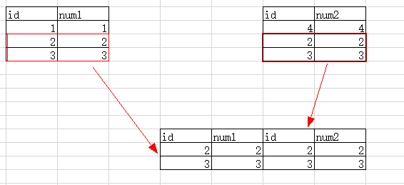

MySql4-day11（连接查询、联合查询、数据库备份还原、创建授权、改密）
一、连接查询
1、内连接inner join……on
inner join语法： select 字段列表 from 表1 inner join 表2 on 表1.字段=表2.字段。
inner可以省略不写， 连接查询就是将两张表进行一个拼接，然后生成一个新的结果。



思考1： select * from 表1 inner join 表2 on 条件 和 select * from 表2 inner join 表1 on 条件，记录的值是否一样？答案： 是一样的。
思考2： 如何进行三张表的内连接查询答案： select * from 表1 inner join 表2 on 条件 inner join 表3 on 条件。
2、左连接left join……on ：又叫左外连接，连接操作时以左表的数据为准。
语法 : select 字段列表 from 表名 left join 表名 on 条件。
思考： select * from 表1 left join 表2 和 select * from 表2 left join 表1记录内容是否一样？
答案： 不一样，是以左表中的数据为准，如果左边中的数据右边中没有对应的关系，那么直接显示null

3、右连接right join……on ：又叫右外连接，以右表中的数据为主。
语法： select * from 表1 right join 表2 on 条件

思考1： select * from 表1 left join 表2 和 select * from 表2 right join 表1 ,显示的记录内容是否一样？
答案2： 都是以表1为主，显示的内容是一样的。
- 自然连接
4.1自然内连接 natural join
4.2自然左连接 natural left join
4.3自然右连接 natural right join

自然连接会自动的去找两张表中的相同字段，然后利用相同字段去进行连接，并且相同的字段只会显示一个。

思考： 如果两张表中存在着多个同名字段，会怎么处理？答案： 只有当多个同名字段的值全部相等，那么才会显示这条记录。

5、using()可部分情况代替on 条件。
在左连接，右连接和内连接时可以不使用on，直接使用using()，可以指定一个同名字段去自动连接。

using显示的结果和自然链接的结果大体相似，using指定的同名字段只显示一次。
//测试数据-------通过以下测试来练手
/*stuinfo测试数据*/
create table stuinfo
(
stuNo char(6) primary key,
stuName varchar(10) not null,
stuSex char(2) not null,
stuAge tinyint not null ,
stuSeat tinyint not null,
stuAddress varchar(10) not null
);
insert into stuinfo values ('s25301','龙傲天','男',18,1,'北京');
insert into stuinfo values ('s25302','皮卡丘','男',31,3,'上海');
insert into stuinfo values ('s25303','皮丘','女',22,2,'北京');
insert into stuinfo values ('s25304','诸葛傲天','男',28,4,'天津');
insert into stuinfo values ('s25305','诸葛翠花','女',23,7,'河南');
insert into stuinfo values ('s25318','王狗蛋','男',26,6,'天津');
insert into stuinfo values ('s25319','梅超风','女',23,5,'河北');
/*stuMarks测试数据*/
create table stuMarks
(
examNo char(7) primary key,
stuNo char(6) not null ,
writtenExam int,
labExam int
);
insert into stumarks values ('s271811','s25303',80,58);
insert into stumarks values ('s271813','s25302',50,90);
insert into stumarks values ('s271815','s25304',65,50);
insert into stumarks values ('s271816','s25301',77,82);
insert into stumarks values ('s271819','s25318',56,48);
//1显示地区及每个地区参加考试的人数，并按人数降序排列
select stuaddress,count(writtenexam) from stuinfo left join stumarks using(stuno) group by stuaddress order by count(writtenexam) desc;
//2显示有学生参加考试的地区和学生姓名
select group_concat(stuname),stuaddress from stuinfo right join stumarks using(stuno) group by stuaddress;
select group_concat(stuname),stuaddress from stuinfo left join stumarks using(stuno) group by stuaddress having count(writtenexam)>0;
//3显示有学生参加考试的地区
select stuaddress from stuinfo right join stumarks using(stuno) group by stuaddress;
select distinct stuaddress from stuinfo right join stumarks using(stuno);
二、联合查询 union
连接查询是将两张表横向的连接到一起，联合查询是将两张表纵向的连接到一起
select 字段列表 from tb_name
union
select 字段列表 from tb_name ；
联合查询的三不同：
- 如果两张表中的字段名称不一致，可以正常进行联合查询，显示的字段名是以最左边书写的表格为主。
- 如果两张表字段的数据类型不一致，也可以正常的联合查询，不影响结果。
- 如果两张表选择的字段数量不同，则会报错
老何有话说： 进行联合查询时，可以保证字段的数据类型不一致或者字段的名称不一致，但是一定要保证字段的数量要一致。
如果联合查询需要分别给两张表做排序，则需要注意一下两点：
1.每个select语句使用小括号包裹起来。2.order by 后面必须要加上limit，如果要取出所有的记录limit可以写一个比较大的值。
union [all|distinct] 默认是distinct，重复的记录只显示一条。

select id,name from student where city like '%西%' order by salary desc limit 100 //工资降序
union //排序结果上下组合到一张表
select id,name from student where age>35 order by salary asc limit 100; //工资升序
三、子查询
在查询的结果上再次进行查询就是一个子查询。where 比较运算符(子查询语句)
1.标量子查询：语法：select 语句 where字段 比较运算符 （subquery）;
select * from student1 where salary>(select avg(salary) from student1);
查询返回的结果是一个一行一列的表格。
2.列子查询
返回的结果是一个一列多行的表格。（一个字段，多条记录）
select * from student1 where age in(select age from student1 where name in('宋小花','周同学'));
where 字段 in|not in(子查询语句)
where 字段 比较运算符 any(子查询语句)
where 字段 比较运算符 all（子查询语句）
思考： in 和 =any是否一样？
答案： 一样的， city in (‘北京’,’上海’)=> city=’北京’ or city=’上海’;
city =any(‘北京’,’上海’)=> city=’北京’ or city=’上海’;
思考： not in 和 !=any是否一样？
答案： 不一样，city not in (‘北京’,’上海’)=> city=’北京’ and city=’上海’;
city !=any(‘北京’,’上海’)=> city!=’北京’ or city!=’上海’;
city !=all(‘北京’,’上海’)=> city!=’北京’ and city!=’上海’;
not in 相当于!=all
3.行子查询
返回的结果是一个一行多列的表格。（多个字段，一条记录）
语法： select * from 表格 where(字段1,字段2) =(select 字段1,字段2 from 表);
where后面的字段需要放在一个小括号的内部。
4.表子查询
返回的结果是一个多行多列的表格。（多个字段，多条记录）
语法： select * from (表子查询的结果) as 表名
表子查询必须要给结果起一个表名
//显示男生和女生的人数
select stusex,count(stusex) from stuinfo group by stusex;
select stusex,count(stusex) from stuinfo where stusex=’男’ union select stusex,count(stusex) from stuinfo where stusex=’女’;
select sum(stusex='男') as '男',sum(stusex='女') '女' from stuinfo;
//查找笔试成绩是80分的学生姓名和学号
select stuno,stuname from stuinfo inner join stumarks using(stuno)where writtenexam=80;
select stuno,stuname from stuinfo where stuno=(select stuno from stumarks where writtenexam=80);
//查找笔试成绩最高的学生
select stuno,stuname from stuinfo inner join stumarks using(stuno) order by writtenexam desc limit 1;
select stuno,stuname from stuinfo where stuno=(select stuno from stumarks order by writtenexam desc limit 1);
select stuno,stuname from stuinfo where stuno=(select stuno from stumarks where writtenexam=(select max(writtenexam)from stumarks));

//查找及格的同学
select stuno,stuname from stuinfo inner join stumarks using(stuno) where writtenexam>=60;
select stuno,stuname from stuinfo where stuno in(select stuno from stumarks where writtenexam>=60);
//查找不及格的同学
select stuno,stuname from stuinfo inner join stumarks using(stuno) where writtenexam<60;
select stuno,stuname from stuinfo where stuno in(select stuno from stumarks where writtenexam<60);
//查找缺考的同学
select stuno,stuname from stuinfo left join stumarks using(stuno) where writtenexam is null;
select stuno,stuname from stuinfo where stuno not in(select stuno from stumarks);

四、数据的备份及还原
备份数据使用的是mysqldump，还原数据使用的是mysql
1.数据的备份
备份文件的语法： mysqldump[.exe] [-h主机][-P端口号] -u用户名 -p密码 [-d][-B] 数据库[表格] > 路径.文件名.sql
-d : 如果存在，是只导出表结构，而不导出数据。默认可不写，
C:\WINDOWS\system32>mysqldump -uroot -proot -d db3<e:/db3.sql
-B : 如果存在，那么他不单单导出表结构和表数据，并且还导出数据库的结构，无分号；
C:\WINDOWS\system32>mysqldump -uroot -proot -B db3<e:/db3.sql
-p如果不写密码直接回车，那么回车以后去输入密码
2.数据的还原
mysql[.exe] [-h主机名][-P端口号]-u用户名 -p密码 [数据库]< 文件路径.文件名
C:\WINDOWS\system32>mysql -uroot -proot db3<e:/db3.sql
如果备份的文件中已经有创建数据库的语法了，那么数据库也可以省略不写
C:\WINDOWS\system32>mysql -uroot -proot <e:/db3.sql
source 文件名 是在登陆mysql以后还原文件。
mysql>source e:/db3.sql;
五、创建用户和用户授权
1.显示所有的用户：select host,user,password from mysql.user;
host: 代表运行在什么样的ip地址登陆，localhost代表自己本身主机，%代表运行所有的电脑登陆。
2.创建用户：create user ‘username’@’ip地址’ [identified by 密码];
create user 'hangzhou'@'localhost' identified by '123456';
3.设置密码： set password [for ‘user’@’ip地址’] = password(‘密码’);
4.用户授权
grant 权限 on 数据库.表格 to ‘user’@’ip地址’[with grant option]
grant all privileges on *.* to ‘user ’@‘ip地址’//给用户赋予所有的权限
5.移除用户的权限
revoke 权限 on 数据库.表格 from ‘user’@’ip地址’
revoke all privileges on *.* from ‘user’@’ip地址’
6.删除用户
drop user ‘user’@’ip地址’
六、找回密码
- 关闭mysql服务 net stop mysql
- 让mysql跳过验证密码的环节 mysqld --skip-grant-tables
- 打开一个新的cmd，然后直接输入mysql登陆
- 修改密码 update mysql.user set password=password(‘新密码’) where user=’root’;
- tastkill /f /im mysqld || tastkill /f /pid 3228 或者直接在任务管理器中结束mysqld任务
- 重新启动mysql服务即可正常登陆
七、MySQL中的预处理
基本语法：
//1、创建预处理语句
prepare 预处理指令 from SQL语句(insert/delete/update/select)
//2、设置参数
set @value = value;
//3、执行预处理
execute 预处理指令;
prepare stmt1 from 'insert into user values (null,?,?,?)';//1创建预处理语句
set @username='zhangsan';//2设置参数
set @password=md5('123456');
execute stmt1 using @username,@password;//3执行预处理语句
select * from user;//4返回执行结果
八、MySQL的事务
①开启事务
1）标准事务：start transaction;
当提交或回滚一个事务之后，事务结束。接下来的操作不在事务操作范围之内。
2）语句事务：set autocommit = 0;
当提交或回滚一个事务之后，事务不会终止，后面的操作仍处于事务之中。
②提交事务：commit;
③回滚事务：rollback;